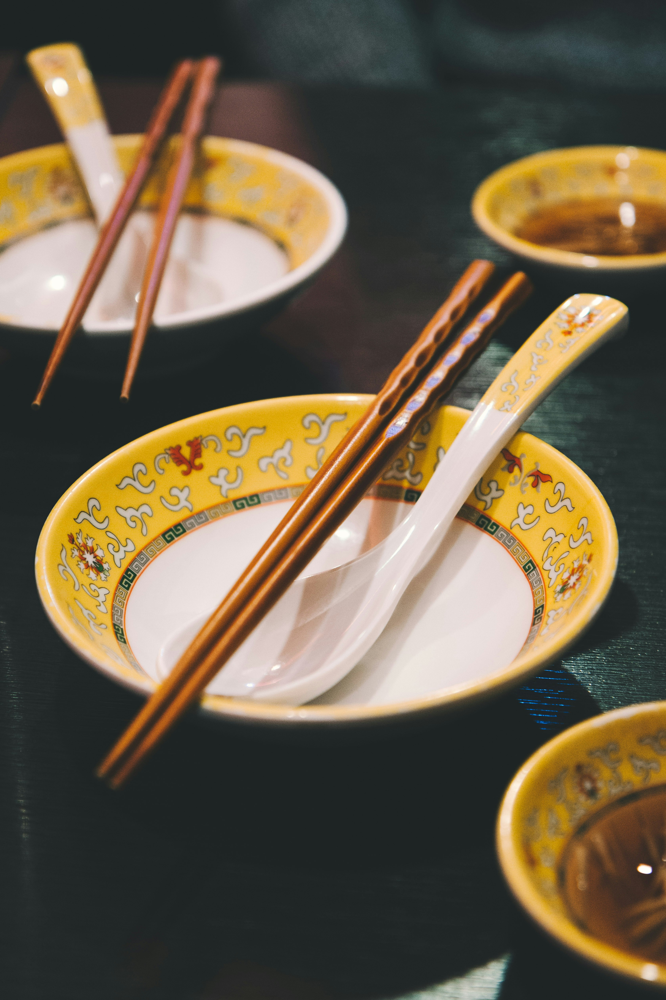

Shrimp & Tofu

This is a refreshing and tender dish rich with flavor that my dad came up with after he and my mom immigrated to the States. Best eaten with rice and can be eaten cold -- great for sweltering summers.
Ingredients
- shrimp (defrosted if it was in freezer)
- soft or firm tofu (soft is great for texture, but firm is better for presentation)
- [OPTIONAL] fresh green onions for garnish and a little extra flavor & kick
- salt to taste (sorry, I'm authentically Chinese in that I can't tell you how much salt to use)
- vegetable oil
Cookware and Cooking Utensils
- cast-iron wok & wooden spatula for best flavor, but as long as stir-frying is possible, it works
Instructions
- If shrimp isn't shelled yet, shell them. Also if it hasn't been done, devein the black intestinal tract (the black stuff along the back of the shrimp).
- Dice shrimp well (should be about 1/3" max). This allows for maximum flavor and tenderness.
- [OPTIONAL] Roll shrimp in some cornstarch for extra tenderness when stir-frying.
- Dice tofu into cubes about the same size. The end amount should be about the same as the diced shrimp.
- Cut off the roots of the green onions up to the point that they start to become green, then thinly chop the green stalks. (Keep the roots since you can grow the roots in a jar of water to save a little on groceries.)
- Cover the bottom of the wok (or pan) in oil and heat on high. When it starts smoking, toss in the shrimp. (For the scaredy-cats like me, you can use a mixing bowl or a ladle to put the shrimp in.)
- Once the shrimp starts to turn pinkish-red, toss in the tofu.
- Stir the salt in.
- Plate the dish and sprinkle the green onions in a circle in the middle. Enjoy!